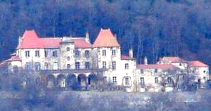
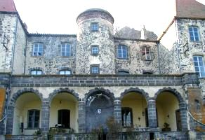
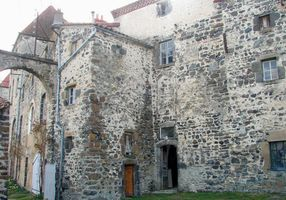
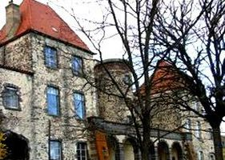
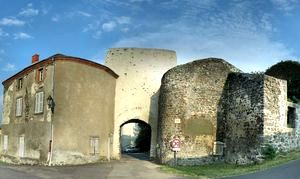

Recensement Jean-Claude Truffet
| Département | 63 — Puy-de-Dôme |
| Canton | Issoire |
| Commune | Vodable |
| Type d'édifice | Château |
| Période d'origine | XIV |





MALLESAIGNE, parmi les familles qui gravitaient autour des dauphins, existaient les Volpillière qui, depuis la fin du XIIIe siècle, tenaient en fief deux hôtels, fours, des terres et une tour dite de Morat. En 1343, Jean de la Volpillière rend hommage au Dauphin. En 1456, le fief passa, par le mariage dIsabeau de la Volpillière avec Étienne Autier de Villemontier, à une famille de Mallesaigne, dans les Combrailles. Elle donna son nom au château quelle fit bâtir. En 1554, Antoine Autier, gentilhomme de la maison du roi, fait hommage pour un domaine, une chapelle dite Sainte-Magdeleine et une grosse tour. Le 24 décembre 1587, le château fut pris par surprise par Virmont, un capitaine protestant, mais celui-ci fut surpris à son tour par les paysans des environs. Les chefs de la garnison protestante se réfugièrent dans la maison de Mallesaigne, ils furent massacrés par les paysans menés par le sieur de Chalus tandis que Gaspard de Montmaurin reprenait Vodable. En 1605, Jacques de Ronzières, écuyer, sire de Laval, qui a épousé la nièce dAntoine Autier, rend hommage pour un château composé de deux corps de logis et dune cour. Au milieu du XVIIIe siècle, celui-ci passe par mariage aux Faugères qui à partir de 1683, se qualifièrent de seigneurs de Vodable, en 1780 François de Faugères acheta les droits de Louis-Philippe (le futur Philippe-Égalité). Mallesaigne fut vendu à un banquier à la Révolution, puis au marquis de Laubespin en 1810, et enfin les dAubier de Condat lacquirent en 1861. Les propriétaires actuels sont M. et Mme Malavié et Mme Hadden.
Mallesaigne, construit principalement au XVIe siècle, se compose dun corps de bâtiment à trois niveaux, flanqué en son milieu dune tour ronde descalier, et de deux pavillons saillants carrés à deux travées de même hauteur, à toiture en croupe, reliés au premier étage par une galerie extérieure et prolongés dune travée dun étage de moins puis de communs vers le nord. La tour ronde, assez importante, abrite un escalier à vis de pierre en très bon état. Le couronnement nest pas dorigine, il était orné naguère dune balustrade en bois. La terrasse du rez-de-chaussée,, et la galerie supportée par cinq arcades en très bel appareil de Volvic datent de la même époque que les ouvertures et le décor du XVIIIe siècle. À lintérieur, on peut admirer des éléments de décorations de style Louis XV tardif, une galerie avec balustrade en bois au premier étage, correspond avec les appartements et permettait aux seigneurs dassister séparément à loffice.
Vodable, au sommet de la butte basaltique, trace d'une courtine et d'un donjon circulaire, une famille portait le nom à partir de la seconde moitié du XIe siècle, en 1262 le dauphin d'Auvergne fait hommage à Alphonse de Poitiers, vers la fin du XIIIe siècle le château fut transformé et agrandi. A la mort du dernier dauphin en 1426 le gendre Louis duc de Bourbon en hérite. Détruit en 1633.
Famille de Mallesaigne
"
Château de Mallesaigne et porte de Vodable.